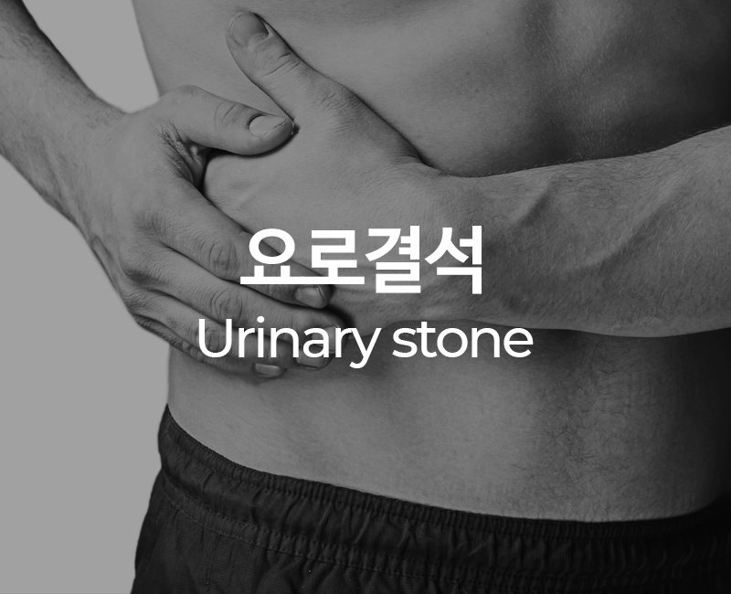
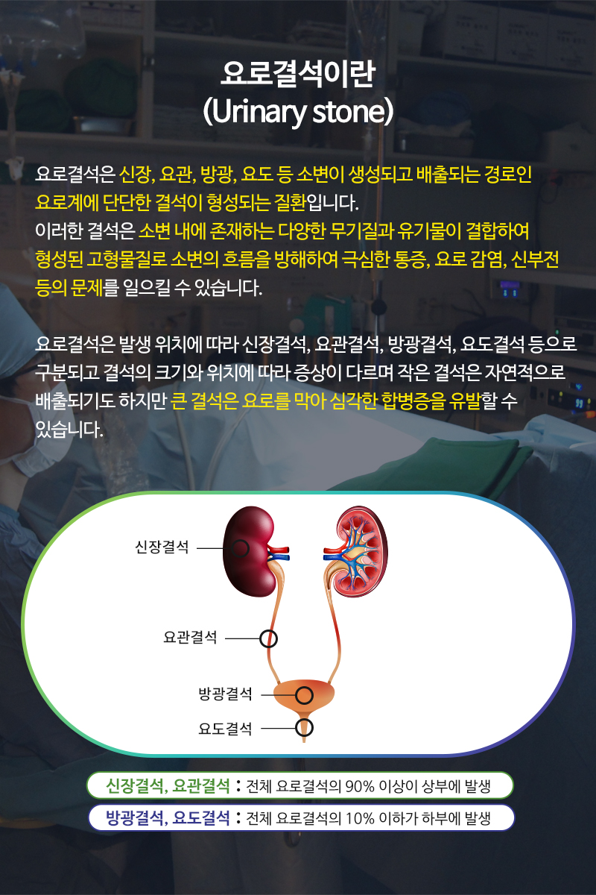
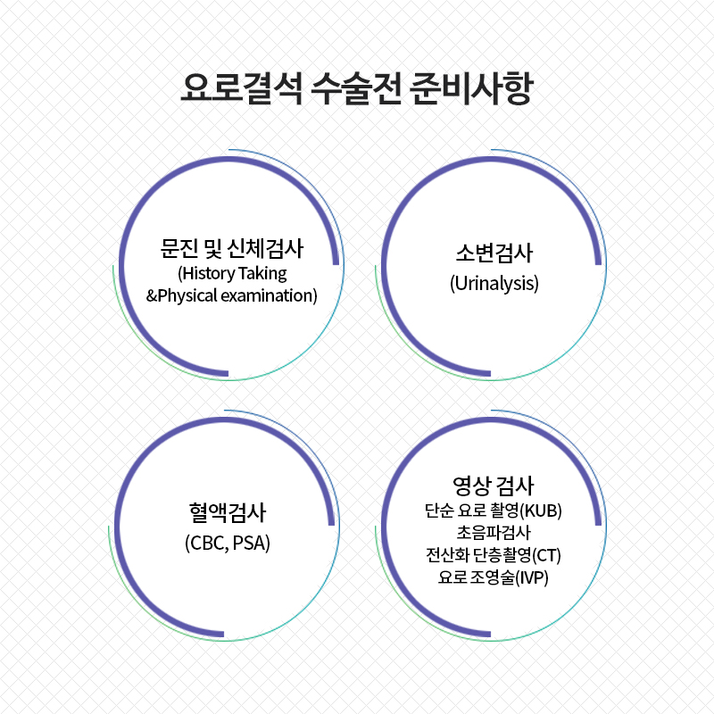
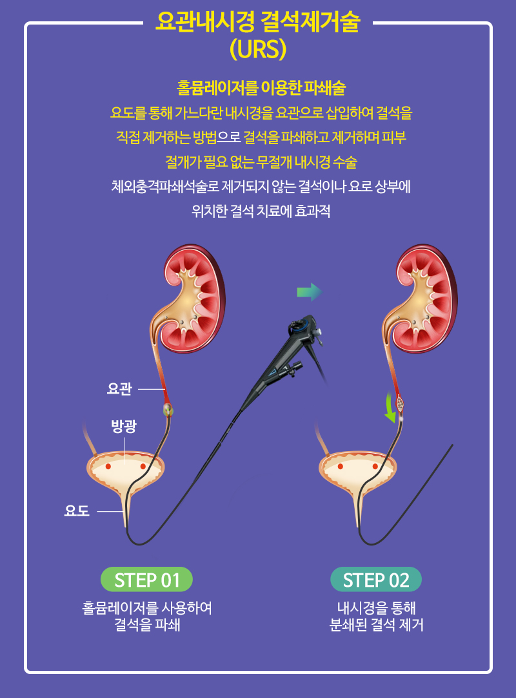

소변 내에 존재하는 다양한 무기질과 유기물이 결합하여 형성된 고형물질인 요로결석. 갑작스러운 통증부터 정밀 진단과 신속한 치료까지 원스톱으로 안내합니다.
요로결석은 신장, 요관, 방광, 요도 등 소변이 지나가는 길에 돌이 생기는 질환으로, 수분 섭취 부족과 식습관·대사적 요인이 복합적으로 작용합니다.

결석의 크기와 위치, 요로 폐색 여부에 따라 치료 방향이 달라지므로 체계적인 진단 검사가 우선됩니다.
소변 내 적혈구(혈뇨)와 요로감염 동반 여부, 신장 기능 및 대사 이상을 신속히 확인합니다.
결석의 위치와 크기, 신장 내 수신증(소변 정체) 발생 여부를 정밀 판독합니다.
자연 배출 가능 크기인지, 체외충격파 쇄석술 등 적극적 치료가 필요한지 즉시 판단합니다.



환자의 통증을 빠르게 완화하고 불필요한 침습을 줄이는 3S(Safe·Simple·Speed) 원칙으로 치료합니다.
크기가 작고 통증 조절이 가능한 경우 충분한 수분 섭취와 약물 치료로 자연 배출을 유도합니다.
피부 절개 없이 체외에서 충격파를 가해 결석을 미세하게 부수어 소변으로 배출시키는 치료법입니다.
치료 후 결석 재발을 낮추기 위한 수분 섭취 가이드와 식이·생활 습관 교정을 함께 안내합니다.